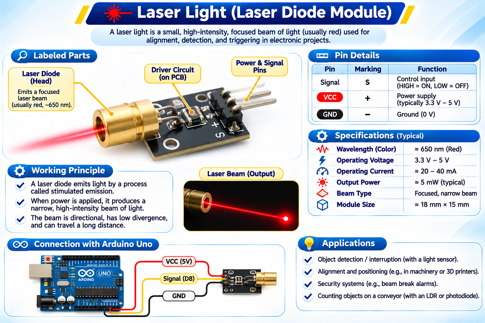
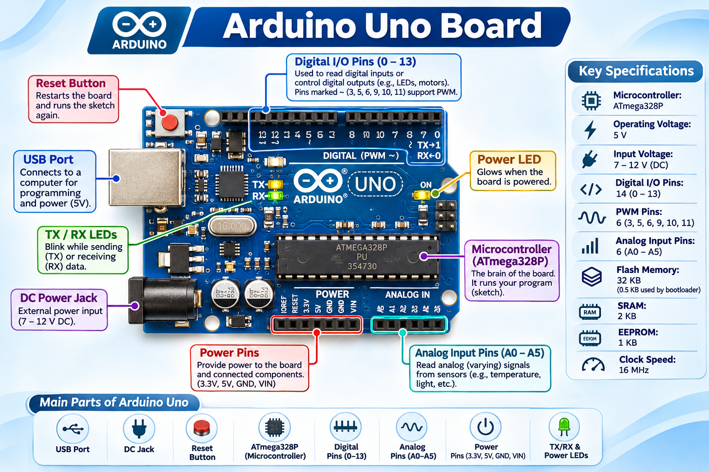
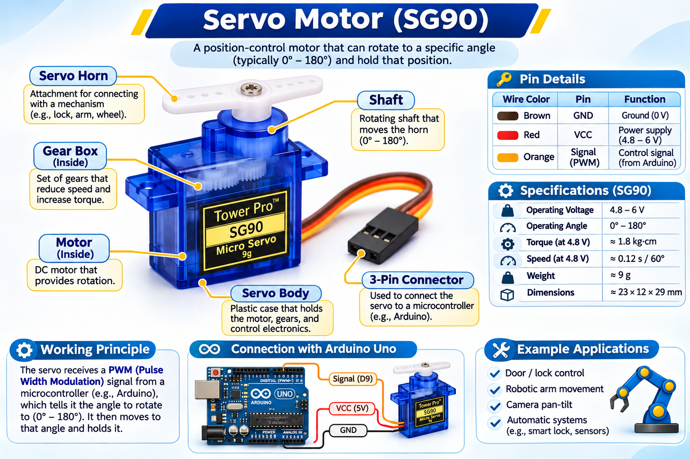
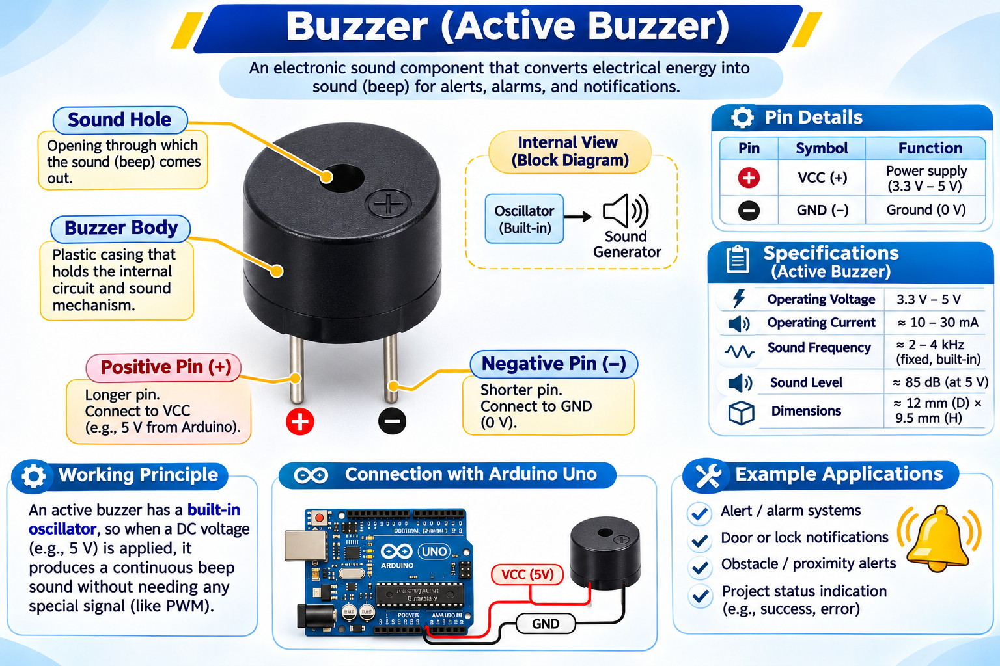
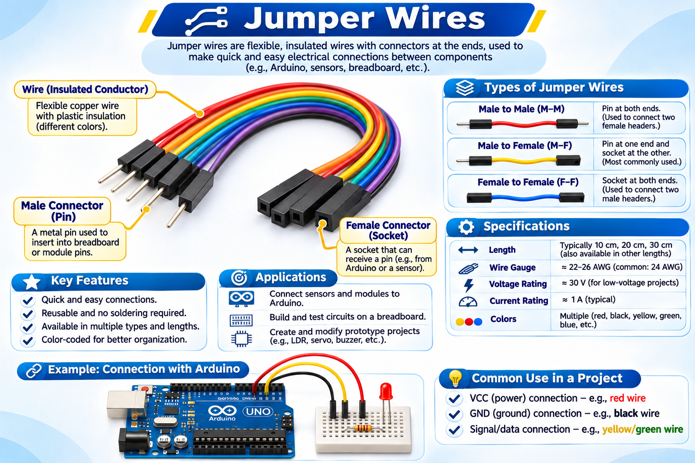
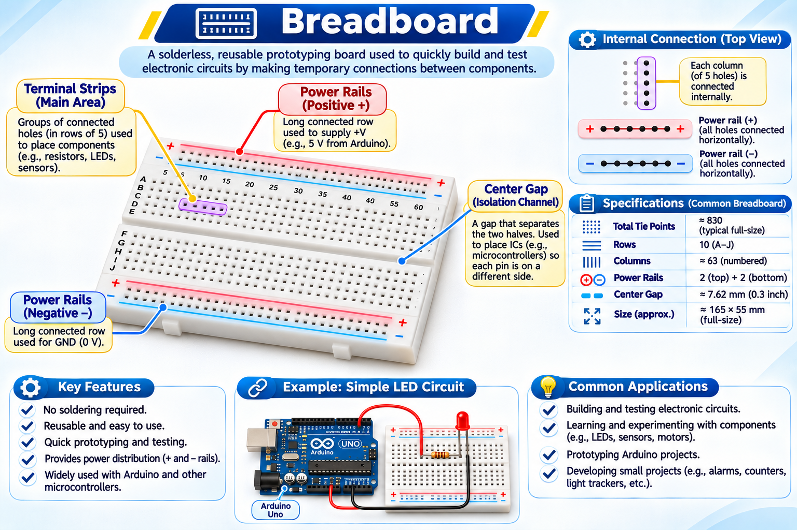
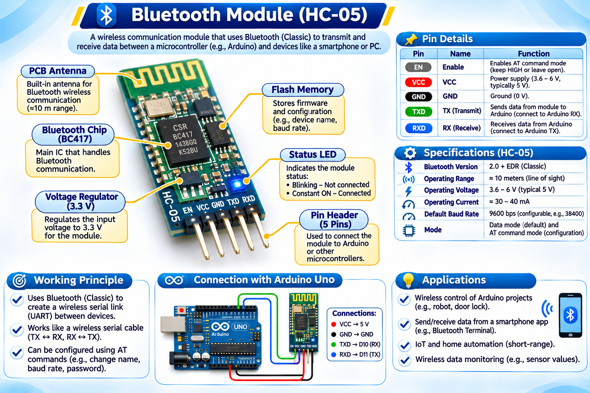
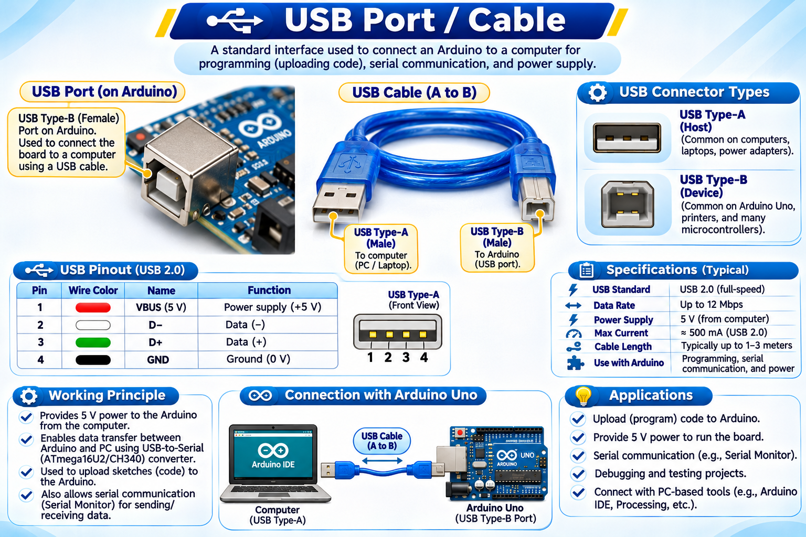

laser-light-receiver.jpg')">1. Laser Light Receiver
A laser light receiver module detects changes in light intensity. It provides an input signal to help identify an interruption near the locker.
An IoT-based smart locker project designed to improve security. The system uses an laser light receiver to detect an interruption or change in light. When an unexpected interruption is detected, the system activates an alert and sends a notification to a mobile phone through Bluetooth.
Purpose, objective and basic information about the project.
Project title: Smart Locker System
Institute: Cauvery Institute of Technology
Programming language: Embedded C
Software / IDE: Arduino IDE
Aim: To provide additional security for a locker by detecting an unexpected interruption using an laser light receiver and sending an alert message to a mobile phone through Bluetooth.
The laser light receiver responds to changes in light intensity. The Arduino board reads the sensor input and controls the connected output devices. If the programmed condition for an interruption is detected, the system can activate the buzzer and communicate an alert to a paired mobile phone using the Bluetooth module.
Replace each sample filename with a photograph of the actual component used in your project.

laser-light-receiver.jpg')">A laser light receiver module detects changes in light intensity. It provides an input signal to help identify an interruption near the locker.

arduino-board.jpg')">The main controller of the project. It reads the sensor input, processes the programmed instructions and controls connected components.

servo-motor.jpg')">Provides controlled rotational movement and can be used to operate the locking mechanism according to the Arduino program.

buzzer.jpg')">Produces an audible alert when the system detects the programmed interruption or security condition.

jumper-wires.jpg')">Used to make electrical connections between the Arduino board, sensors and other electronic components.

breadboard.jpg')">Allows components to be connected and tested without soldering, making it useful for building the prototype circuit.

bluetooth-module.jpg')">Provides wireless communication between the Arduino-based system and a paired mobile phone to transmit alert information.

usb-cable.jpg')">Used to connect the Arduino board to a computer for uploading the program and, where supported, supplying power.
Basic sequence of how the locker security system operates.
The laser light receiver monitors light intensity near the protected locker area.
The Arduino reads the sensor value. When the set interruption condition is met, it activates the buzzer and controls the servo motor as programmed.
The Bluetooth module sends alert information to a paired mobile phone.
Note: The exact alert text, sensor threshold and servo movement depend on the Embedded C program and circuit configuration used in the prototype.
Tools used to develop and program the project.
Used to write the instructions that read the laser light receiver, control the buzzer and servo motor, and manage Bluetooth communication.
Programming languageUsed to write, compile and upload the program to the Arduino board through a USB connection.
Development softwareThe Smart Locker System demonstrates how sensors, a microcontroller, an audible alarm and wireless communication can be combined for locker security. The project provides an alert to a paired mobile phone through Bluetooth when the programmed interruption condition is detected.